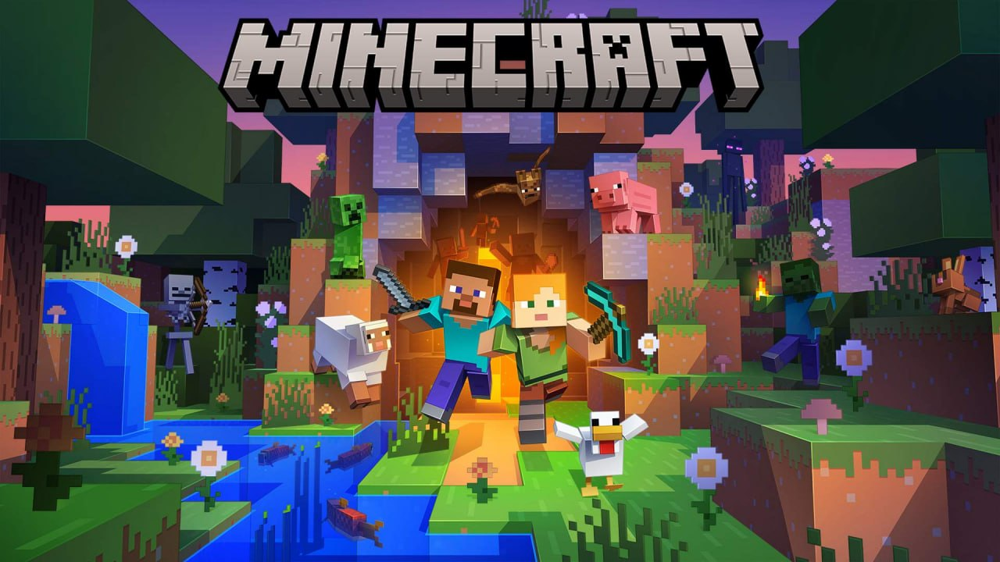
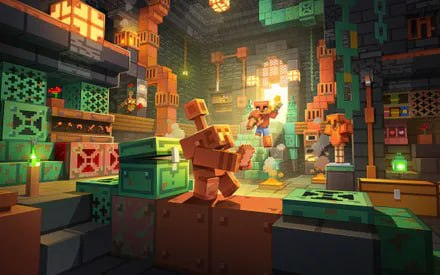

2009 — Початок
arkus Persson (Notch) почав розробку гри Minecraft. створює перші версії гри. Це була дуже проста гра з блоками, яка ще не мала нормального виживання

2011 — Реліз
У листопаді виходить Minecraft 1.0 — повна версія гри. З’являється режим Survival, нові блоки, монстри та механіки.додається Ендер світ, дракон та фінальний контент. Minecraft починає ставати популярним серед гравців по всьому світу.
Творець
Розробником гри Minecraft є шведський програміст Маркус Перссон, відомий під ніком Notch. Він розпочав створення Minecraft у 2009 році як невеликий інді-проєкт. Спочатку гра мала просту графіку та базові можливості, але завдяки ідеї свободи будівництва швидко стала популярною у всьому світі. Пізніше Маркус Перссон заснував компанію Mojang Studios, яка займалася розвитком гри. У 2014 році студію було продано компанії Microsoft�, після чого подальший розвиток Minecraft продовжила вже нова команда.
2014 — Купівля
У 2014 році гра Minecraft разом із компанією Mojang Studios була викуплена американською компанією Microsoft�. Сума угоди становила приблизно 2,5 мільярда доларів США. Після цього права на гру повністю перейшли до Microsoft, а творець гри Маркус Перссон (Notch) залишив компанію та перестав займатися розвитком проєкту. Після викупу Minecraft продовжив активно розвиватися: з’явилися нові оновлення, платформи та версії гри (ПК, консолі, мобільні пристрої)

Сьогодні
Зараз Minecraft — це вже зовсім інша, дуже велика гра 👍 Розвиває її компанія Mojang Studios� (під керівництвом Microsoft�, яка купила гру у 2014) Гра має регулярні оновлення: додають нові біоми, мобів, блоки, структури і механіки Є Java Edition (ПК) і Bedrock Edition (телефони, консолі, Windows) Є офіційні сервери, міні-ігри, PvP, виживання, творчі режими Дуже розвинувся мультиплеєр і моди (зараз їх тисячі) Останні великі оновлення додають: нові підземні структури і біоми нові моби (типу ворожих і нейтральних) більше контенту для дослідження і будівництва